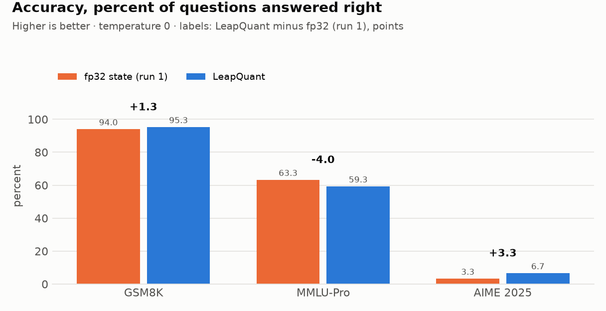

Task accuracy
Qwen3.5-9B answers benchmark questions at temperature 0 through each server configuration; the answers are scored by rule. Runs of the same questions are compared in pairs: only the questions on which two runs disagree carry information.

| Configuration | Task | Questions | Accuracy | Answers cut at the token limit | Mean answer tokens |
|---|---|---|---|---|---|
| fp32 state (run 1) | GSM8K | 300 | 94.00% | 24 | 2208 |
| fp32 state (run 1) | MMLU-Pro | 300 | 63.33% | 101 | 5223 |
| fp32 state (run 1) | AIME 2025 | 30 | 3.33% | 29 | 8176 |
| fp32 state (run 2) | GSM8K | 300 | 93.67% | 23 | 2168 |
| fp32 state (run 2) | MMLU-Pro | 300 | 64.00% | 105 | 5266 |
| fp32 state (run 2) | AIME 2025 | 30 | 3.33% | 29 | 8176 |
| LeapQuant | GSM8K | 300 | 95.33% | 25 | 2263 |
| LeapQuant | MMLU-Pro | 300 | 59.33% | 99 | 5276 |
| LeapQuant | AIME 2025 | 30 | 6.67% | 28 | 8156 |
Paired comparisons
Noninferiority with a margin of 1 point: PASS when the lower end of the 95% interval of the difference is above -1 point; FAIL when its upper end is below -1; otherwise INCONCLUSIVE (too few questions to tell). The fp32 server against itself shows the run-to-run noise.
| Comparison | Task | Paired | This run | Baseline | Only this right | Only baseline right | Difference | 95% interval | Verdict |
|---|---|---|---|---|---|---|---|---|---|
| leapquant against fp32 | AIME 2025 | 30 | 6.67% | 3.33% | 1 | 0 | +3.33 pts | -3.09 .. +9.76 pts | INCONCLUSIVE |
| leapquant against fp32 | GSM8K | 300 | 95.33% | 94.00% | 7 | 3 | +1.33 pts | -0.73 .. +3.39 pts | PASS |
| leapquant against fp32 | MMLU-Pro | 300 | 59.33% | 63.33% | 12 | 24 | -4.00 pts | -7.89 .. -0.11 pts | INCONCLUSIVE |
| fp32 run 2 against fp32 run 1 | AIME 2025 | 30 | 3.33% | 3.33% | 0 | 0 | +0.00 pts | +0.00 .. +0.00 pts | PASS |
| fp32 run 2 against fp32 run 1 | GSM8K | 300 | 93.67% | 94.00% | 3 | 4 | -0.33 pts | -2.06 .. +1.39 pts | INCONCLUSIVE |
| fp32 run 2 against fp32 run 1 | MMLU-Pro | 300 | 64.00% | 63.33% | 8 | 6 | +0.67 pts | -1.78 .. +3.11 pts | INCONCLUSIVE |
What it does not show
Tasks other than these three; answers longer than the token limit are scored as they stand (see the column of cut answers). Source: accuracy_*.json, accuracy_*_vs_*.txt.
Generated 2026-11-13 22:50 from results/run-quick-einstein-v7, results/fast_checks_v2, results/s20_ablations, results/gpu-suite, results/fast_checks by reports/generate_reports.py. All reports.